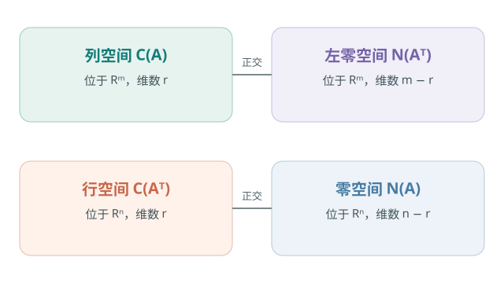

向量空间、秩与维数
矩阵不只是一张数字表。它同时决定四个彼此正交关联的子空间；秩和零度则把输入自由度与输出有效维数精确地联系起来。
先提出问题：为什么有很多列，真正独立的方向却可能很少？
矩阵可以有很多列，但其中一些列可能只是其他列的重复组合。秩告诉我们有多少个真正独立的方向；零空间则记录哪些输入变化完全不会改变输出。
要理解矩阵，不能只看它把一个向量变成什么，还要同时看它能够输出什么，以及哪些输入会被它压缩掉。
先看图形：四个基本子空间成对正交

几何直觉列空间回答“输出能到哪里”；零空间回答“哪些输入会被压成零”。左零空间和行空间则从输出约束与输入约束的角度补全整个图景。
建立数学语言：空间、子空间、秩
1. 什么是向量空间？
向量空间是一个集合，允许向量相加和数乘，并满足封闭性及相应运算律。除了 Rⁿ，次数不超过 d 的多项式、固定尺寸矩阵也能构成向量空间。
子空间必须包含零向量，并且对加法和数乘封闭：
2. 秩与零度
矩阵 A 的秩 rank(A) 是列空间的维数，也等于行空间的维数。零度 nullity(A) 是零空间的维数。对于 A∈Rᵐˣⁿ：
定理 1
注意右边是列数 n，而不是行数 m，因为零空间中的向量是输入向量，属于 Rⁿ。
推导与例题：用一个矩阵看见四个空间
考虑：
第二行是第一行的两倍，三列也都在同一条方向线上，所以 rank(A)=1。列空间为 span{(1,2)}。
求零空间 Ax=0，只需要解 x+2y+3z=0。令 y=s、z=t，则 x=−2s−3t：
因此 nullity(A)=2，秩-零度定理给出 1+2=3，与 A 的列数相符。
行空间由 (1,2,3) 张成；左零空间解 Aᵀy=0，得到 y=(-2,1) 的所有倍数。它与列空间正交；同样，零空间中的两个基向量都与行向量 (1,2,3) 正交。
交叉验证直接计算 (−2,1,0)·(1,2,3)=0，(−3,0,1)·(1,2,3)=0；并且 (−2,1)ᵀA=(0,0,0)。四个空间的维数分别是 1、2、1、1，符合 R³ 与 R² 的维数分解。
交互实验：两条向量是否真的独立？
切换第二个向量是否与第一个向量共线。两个向量在 R² 中独立时张成整个平面；相关时只张成一条直线。
秩与张成空间实验室
无关：张成空间是整个平面，rank = 2
边界与易错点
- 零向量不能属于线性无关组。 因为 1·0=0 已经给出非平凡线性关系。
- 秩不等于列数。 列数只是输入维数，秩是独立列的最大数量。
- 零空间属于输入空间。 对 m×n 矩阵，N(A) 是 Rⁿ 的子空间。
- 行秩等于列秩。 这是定理，不是因为行和列的数量相同。
自测：用秩-零度判断自由度
题目：A 是 5×7 矩阵，rank(A)=4，nullity(A) 是多少？
由 rank + nullity = 列数 n，得到 nullity(A)=7−4=3。
题目：如果 A 的零空间只有零向量，说明什么？
nullity(A)=0，所有列线性无关，rank(A)=n。A 的列数不能超过行数，因此 m≥n；若 A 是方阵，则 A 可逆。